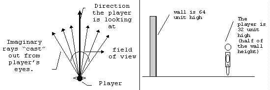

Step 2 DEFINING PROJECTION ATTRIBUTES
Specifically, we need to know these attributes:
Player/viewer’s height, player’s field of view (FOV), and player’s position.
Projection plane’s dimension.
Relationship between player and projection plane.

Field of view (FOV) = 60 degrees
The player should be able to see what is in front of him/her. For this, we will need to define a field of view (FOV). The FOV determines how wide the player sees the world in front of him/her (see Figure above). Most humans have a FOV of 90 degrees or more. However, FOV with this angle does not look good on screen. Therefore, we define the FOV to be 60 degrees through trial and experimentation (on how good it looks on screen).
player’s height = 32 units
The player’s height is defined to be 32 units because this is a reasonable assumption considering that walls (the cubes) are 64 units high.
walls are cubes of size = 64 units
Grid and Unit coordinates
The player P of coordinates(px,py) is at the coordinates (1,2) in the Grid coordinates (see Figure above).
What does it means ?????
In a continuous world, the player will be at (1,5,2.5) but our grid is discrete so grid coordinates are rounded down to (1,2). In the unit coordinate the player is at (1.5*wallsize, 2.5*wallsize)=(64+32,128+32).
So becareful, there are the Grid Coordinates and the Unit Coordinates. The Grid Coordinates is a kind of block coordinates system. The Unit Coordinates is a roughly a pixel coordinates system.
Let us code a map in the Grid and in the Unit coordinates système
First let us display the grid of 64 pixels units.
drawGrid: function()
{
//Draw vertical axis
cssColor="blue";
for (var x=0; x
The map is a square of 6 rows and 6 colums.
The width is 6 and the hight is 6.
Each cell will have a size of 64 pixels (units).
// Size of a wall = 64 pixels
this.wallsize=64
// 2 dimensional map
this.fMap=[];
this.MAP_WIDTH=6;
this.MAP_HEIGHT=6;
The map is encoded as 1D array of chars.
// CREATE A SIMPLE MAP.
// Use string for elegance (easier to see). W=Wall, O=Opening
// CREATE A SIMPLE MAP.
// Use string for elegance (easier to see). W=Wall, O=Opening
var map=
'WWWWWW'+
'WOOOOW'+
'WOOOOW'+
'WOOOOW'+
'WOOOOW'+
'WWWWWW';
// Remove spaces and tabs
this.fMap=map.replace(/\s+/g, '');
Each cell of the map will be a square of 64 by 64. So we need a function to draw rectangles.
drawFillRectangle: function(x, y, width, height, cssColor)
{
this.context.fillStyle = cssColor;
this.context.beginPath();
this.context.rect(x, y, width, height);
this.context.closePath();
this.context.fill();
},
Then we need a function to get an 1D index from x and y 2D coordinates.
xytoindex: function(x,y,width)
{
index = x + width*y;
return index;
},
Then we need to draw each block from the map.
for (var y=0; y<this.MAP_HEIGHT; y++)
{
for (var x=0; x<this.MAP_WIDTH; x++)
{
var cssColor="white";
index=this.xytoindex(x,y,this.MAP_WIDTH);
if (this.fMap.charAt(index)=="W")
{
cssColor="black";
}
else
{
}
this.drawFillRectangle(x*this.wallsize,
y*this.wallsize, this.wallsize, this.wallsize, cssColor);
}
}
Let us put the canvas
Projection plane
We need to define a projection plane so that we can project what the player sees into the projection plane. A projection plane of 320 units wide and 200 units high is a good start.
By knowing the field of view (FOV) and the dimension of the projection plane, we can calculate the angle between subsequent rays and the distance between the player and the projection plane. These steps are illustrated in the Figure below.
Distance to the Projection plane
The distance between the player and the projection plane. We know that the player is at the coordinates (160,100,d) in the Unit Coordinates system. The player is at the middle of the width 320/2=160.
d is the distance to the projection plane.
FOV=60 degrees
tan(30) = 160/d
So --> d = 160/tan(30) = 277
From this we known the coordinates of the player (160,100,277).
So now we know:
Dimension of the Projection Plane = 320 x 200 units
Center of the Projection Plane = (160,100)
Distance to the Projection Plane = 277 units
Angle between subsequent rays = 1 column = 60/320 degrees=0.1875 degrees.
Number of angles = 320 angles.
Let us code it
Programmer's tricks. It is faster to deal with integers.
Angles could be expressed as integers and stored in tables.
FOV=60 degrees = 320 units in the projection plane
30 degrees = 160 units in the projection plane
15 degrees = 80 units in the projection plane
and so on
We will see later that this trick could be useful to build an look up table.
//Convert arc (degree) to radian
degreeToRad: function(arcAngle)
{
return ((arcAngle*Math.PI)/180);
},
function GameWindow(canvas) {
// create the main canvas
this.width = canvas.width;
this.height = canvas.height;
this.canvas = canvas;
this.context = this.canvas.getContext( '2d' );
this.animationFrameID;
//PROJECTION ATTRIBUTES
this.FOV=60
this.HalfFOV=this.FOV/2
this.HalfFOVrad=this.degreeToRad(this.HalfFOV)
this.CenterProjectionPlaneX=this.width/2
this.CenterProjectionPlaneY=this.height/2
this.DistanceProjectionPlane=this.CenterProjectionPlaneX/Math.tan(this.HalfFOVrad)
this.AngleByColumn=this.FOV/this.width
console.log("DistanceProjectionPlane="+this.DistanceProjectionPlane);
}
We display the player in red p(160,200-32)
Blue lines represent the FOV of the player p
Green lines represent the FOV for a virtual player v(160,277) located at the distance to projection place (y=277)
Next: Step 3: FINDING WALLS
step3.html
Back: Step 1: What's ray tracing
tutorialraycastingv1.html